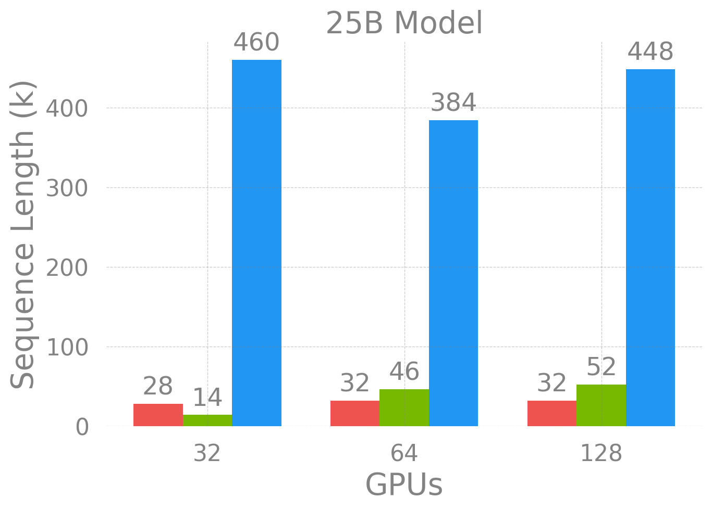

Loooooooong Sequence Lengths
![]()
Initial Results
PRE-RELEASE
I’ve kept in the (executable) code blocks for the time being (just to show how I’m generating the bar plots in Figure 1) but these can be ommitted in the actual README
x = np.arange(len(gpus))
width = 0.25
multiplier = 0
outdir = Path(os.getcwd()).joinpath('assets')
outdir.mkdir(exist_ok=True, parents=True)
from toolbox import COLORS
colors = {
'Old': COLORS['red'],
'Nvidia': COLORS['green'],
'New': COLORS['blue']
}
for idx, (model_size, d) in enumerate(data.items()):
multiplier = 0
figure, axes = plt.subplots(layout='constrained')
fig = plt.gcf()
ax = plt.gca()
for label, value in d.items():
offset = width * multiplier
rects = ax.bar(x + offset, value, width, label=label, color=colors[label])
ax.bar_label(rects, padding=3)
multiplier += 1
ax.set_xlabel('GPUs', fontsize='large')
ax.set_title(f'{model_size} Model', fontsize='large')
ax.set_xticks(x + width, gpus)
if idx == 0:
ax.set_ylabel('Sequence Length (k)', fontsize='large')
if idx > 0:
ax.legend(loc='best', ncols=1, frameon=True, bbox_to_anchor=(1, 1.05))
save_figure(fname=f'{model_size}', outdir=outdir)
_ = plt.show()
25B Model33B ModelIn each case, the
new (current) implementation significantly outperforms both NVIDIA/Megatron-LM as well as our previous implementation.import pandas as pd
from toolbox import get_console
console = get_console()
df = pd.read_csv('./data.csv')
df| MODEL_SIZE | GPUs | Implementation | SEQ_LEN (k) | Improvement | |
|---|---|---|---|---|---|
| 0 | 25B | 32 | OLD | 28 | 4.571429 |
| 1 | 25B | 32 | NVIDIA | 14 | 9.142857 |
| 2 | 25B | 32 | NEW | 128 | 1.000000 |
| 3 | 25B | 64 | OLD | 32 | 12.000000 |
| 4 | 25B | 64 | NVIDIA | 46 | 8.347826 |
| 5 | 25B | 64 | NEW | 384 | 1.000000 |
| 6 | 25B | 128 | OLD | 32 | 14.000000 |
| 7 | 25B | 128 | NVIDIA | 52 | 8.615385 |
| 8 | 25B | 128 | NEW | 448 | 1.000000 |
| 9 | 33B | 32 | OLD | 36 | 5.333333 |
| 10 | 33B | 32 | NVIDIA | 26 | 7.384615 |
| 11 | 33B | 32 | NEW | 192 | 1.000000 |
| 12 | 33B | 64 | OLD | 42 | 10.666667 |
| 13 | 33B | 64 | NVIDIA | 48 | 9.333333 |
| 14 | 33B | 64 | NEW | 448 | 1.000000 |
| 15 | 33B | 128 | OLD | 42 | 12.190476 |
| 16 | 33B | 128 | NVIDIA | 52 | 9.846154 |
| 17 | 33B | 128 | NEW | 512 | 1.000000 |
New Results
Citation
BibTeX citation:
@online{foreman2023,
author = {Foreman, Sam},
title = {Personal {Website}},
date = {2023-09-08},
url = {https://saforem2.github.io},
langid = {en}
}
For attribution, please cite this work as:
Foreman, Sam. 2023. “Personal Website.” September 8, 2023.
https://saforem2.github.io.